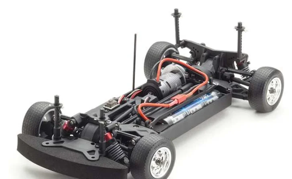

京商 EP Fazer VEi

引用元画像：RCScrapyard.net
📋 基本情報
| メーカー | 京商（Kyosho） |
|---|---|
| 機種名 | EP Fazer VEi |
| シャーシ略称 | EP Fazer VEi |
| 型番 | 34051T1（Dodge SRT Challenger 2015 HELLCAT グリーン） 34051T2（Dodge SRT Challenger 2015 HELLCAT ブラック） 34052T1（Dodge Charger 1970 ブルー） 34052T2（Dodge Charger 1970 ブラック） 34053T1（1970 Chevy Chevelle SS 454 LS6 Fathom レッド） 34053T2（1970 Chevy Chevelle SS 454 LS6 Fathom ブルー） |
| 発売時期 | 2015年（初回モデル） 2017年（追加モデル：Chevy Chevelle） |
| 価格 | 詳細不明 |
| 生産状況 | 生産終了 |
| カテゴリー | ラジコンカー（1/10スケール 電動RCカー） |
| サブカテゴリー | ツーリングカー（4WD オンロード） |
| シリーズ | FAZER VEiシリーズ（アメリカンマッスルカー） |
📏 シャーシスペック
| 全長 | 詳細不明 |
|---|---|
| 全幅 | 詳細不明 |
| 全高 | 詳細不明 |
| ホイールベース | 詳細不明 |
| トレッド | 詳細不明 |
| タイヤ幅/径 | 詳細不明 |
| フレーム | モールドプラスチックシャーシ |
| 全備重量 | 詳細不明 |
⚙️ 駆動系
| 駆動方式 | シャフトドライブ4WD |
|---|---|
| デフギヤ | ギヤデフ |
| ギヤ比 | 詳細不明 |
| ギヤピッチ | 詳細不明 |
| トランスミッション | 詳細不明 |
| スリッパークラッチ | 詳細不明 |
| ドライブシャフト | ドッグボーンドライブシャフト |
| モーター | 標準装備（ReadySet RTR） |
| ESC | 標準装備（ReadySet RTR） |
🔧 サスペンション
| 形式 | 4輪ダブルウィッシュボーン独立懸架 |
|---|---|
| サスアーム | 詳細不明 |
| ダンパー | オイル充填式コイルスプリングダンパー×4本 |
| ステアリング | 詳細不明 |
| ベアリング | フルボールベアリング標準装備 |
📡 電装品（ReadySet RTR）
| 送信機 | SYNCRO KT-231P送信機（標準装備） |
|---|---|
| モーター | 標準装備 |
| ESC | 標準装備 |
| バッテリー | 標準装備 |
| 充電器 | 標準装備 |
💡 特徴
EP Fazer VEiシリーズ - アメリカンマッスルカーの世界
- 2015年発売のFAZER VEiシリーズの電動4WDツーリングカー
- ReadySet RTRモデルで開封後すぐに走行可能（すべて標準装備）
- SYNCRO KT-231P送信機、モーター、ESC、バッテリー、充電器すべて付属
- シャフトドライブ4WD方式で高いトラクションと安定した走行性能
豪快なアメリカンマッスルカーボディラインナップ
- Dodge SRT Challenger 2015 HELLCAT（#34051T1 グリーン / #34051T2 ブラック）
- Dodge Charger 1970（#34052T1 ブルー / #34052T2 ブラック）
- 1970 Chevy Chevelle SS 454 LS6 Fathom（#34053T1 レッド / #34053T2 ブルー）
- 1970年代の伝説的マッスルカーと2015年の最新HELLCATを精密に再現
- 各モデル2色展開でカラーバリエーションも豊富
高品質なシャーシ構成
- モールドプラスチック製シャーシ（軽量・高剛性）
- ギヤデフ採用（スムーズな駆動力配分）
- オイル充填式ダンパー×4本（安定したサスペンション）
- ドッグボーンドライブシャフト（効率的な動力伝達）
- フルボールベアリング標準装備（低摩擦・高効率）
FAZER VEiシリーズの系譜
- アメリカンマッスルカーに特化したラインナップ
- オンロード走行に最適化された設計
- 迫力あるボディデザインとサウンドで人気
- サーキット走行からディスプレイまで幅広く楽しめる
🔧 ぽすとそに工房での修理実績
修理難易度
★★★★☆（困難）
生産終了でパーツ供給がかなり少ないため、修理が困難です。
よくある故障・注意点
- オイルダンパーのオイル漏れ（Oリング劣化）
- ギヤデフの摩耗・異音
- ドライブシャフトの摩耗・曲がり
- プラスチックシャーシの割れ・破損
- ボールジョイントの緩み・外れ
- スパーギヤの摩耗・歯の欠け
- モーターやESCの経年劣化
修理のポイント
- 交換部品の入手が困難なため、既存パーツの丁寧なメンテナンスが重要
- オイルダンパーはOリング交換・オイル補充で延命可能
- ドライブシャフトは汎用品への交換を検討
- ギヤボックス内部のグリスアップを定期的に実施
- ボールジョイントは他メーカー互換品の使用も検討
- プラスチックパーツの破損は接着剤や補強で対応
- モーターやESCは現代の製品への換装も可能
その他の特徴
- 生産終了で専用パーツの入手が困難
- アメリカンマッスルカーボディが非常に魅力的
- ReadySet RTRモデルで初心者にも扱いやすい
- 4WDツーリングカーとしての基本性能は高い
- 修理には汎用パーツや他メーカー互換品の活用が推奨
- VE-XやVEと比較してパーツ供給がやや良好（難易度★4つ）